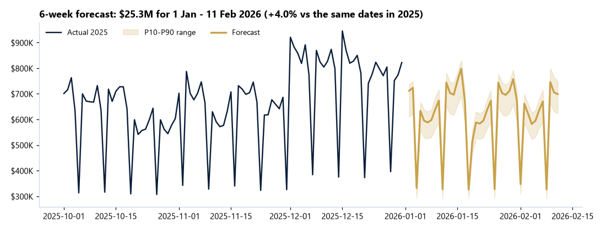
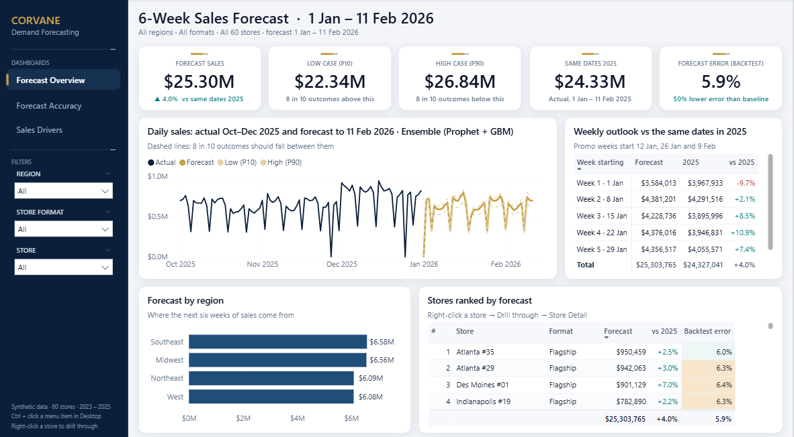
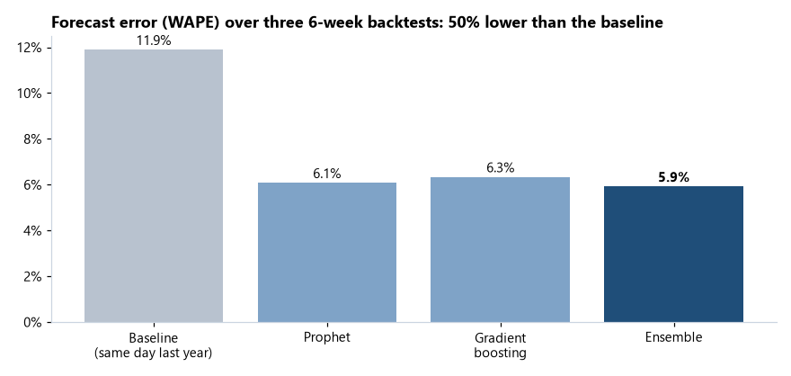
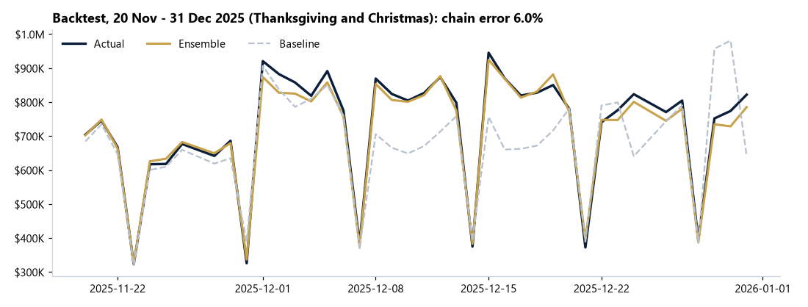
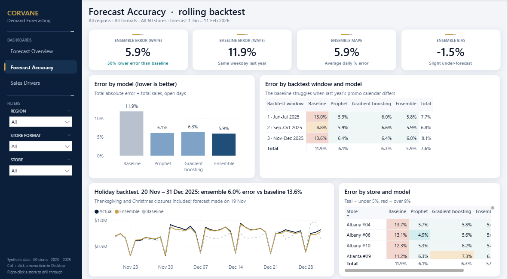
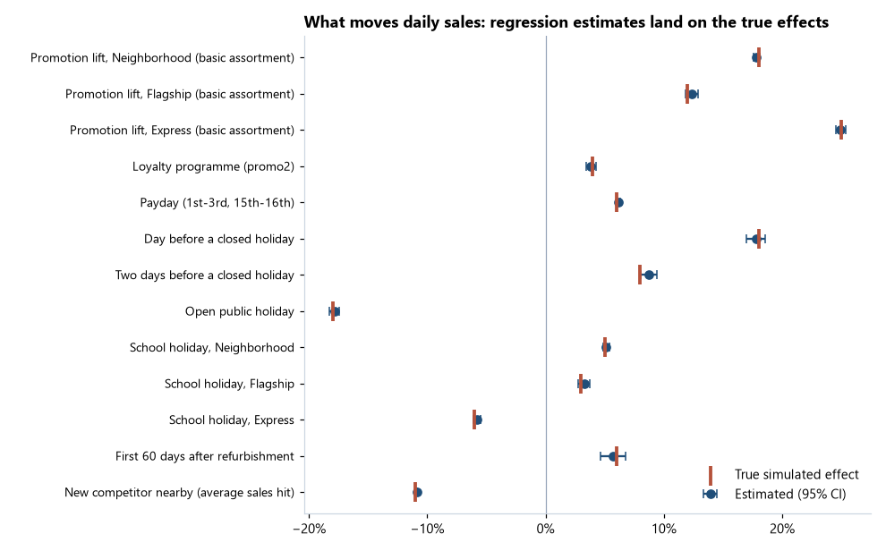
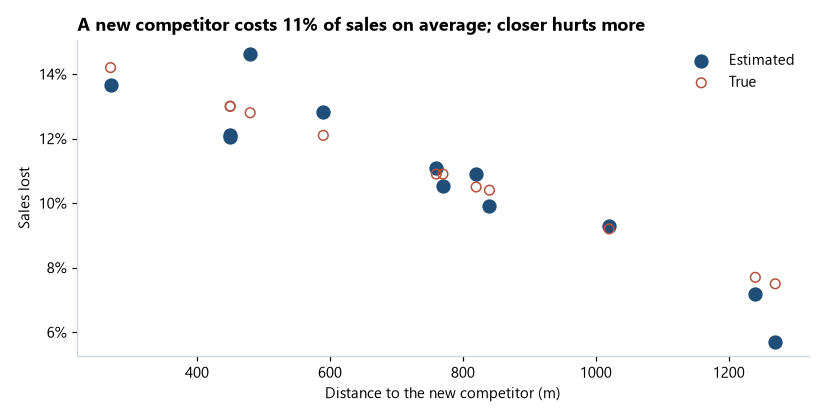
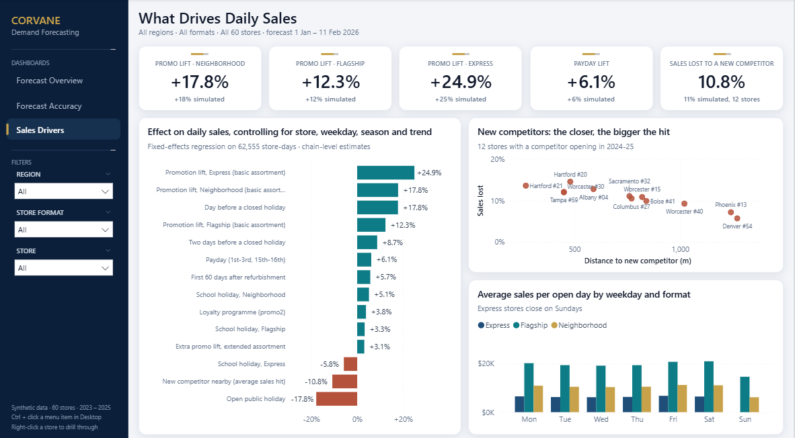

Demand forecasting · time series · machine learning
A 6-week daily sales forecast for 60 stores
Corvane Drugstores needs a daily forecast for every store from 1 January to 11 February 2026 to plan staff, stock and promotions, and wants to know what really moves sales. I built and backtested four forecasting approaches, measured the drivers, and delivered the forecast as an Excel workbook and a Power BI dashboard.
Synthetic data. Three years of daily sales were generated by a documented Python simulator with known effects (promotions, holidays, paydays, school breaks, competitors) and deliberately messy exports. Because the true effects are known, the driver analysis is checked against them.
Key findings
- An ensemble of Prophet and gradient boosting halves the error of "same weekday last year", from 11.9% to 5.9% WAPE over three 6-week backtests, close to the 5.6% floor set by day-to-day noise.
- Promotion lift depends on the store format: +12% Flagship, +18% Neighborhood, +25% Express. A simple promo-vs-no-promo average says +23% for everyone and would misallocate promo budget.
- The calendar matters: +6% on paydays, +18% the day before a closed holiday, −18% on open public holidays, and school breaks help neighbourhood stores but hurt commuter (Express) stores.
- A new competitor costs about 11% of sales, from 14% next door to 6% at 1.3 km.
- 2026 starts below 2025 in week 1 because last year's first week had a promotion and this year's plan does not; the forecast follows the plan.
Forecast


Accuracy
Each model forecast three past 6-week windows of 2025 using only the data available at the time.
| Model | WAPE | Bias |
|---|---|---|
| Baseline (same weekday last year) | 11.9% | −3.8% |
| Prophet, one model per store | 6.1% | −0.3% |
| Gradient boosting, one global model | 6.3% | −2.8% |
| Ensemble (selected) | 5.9% | −1.5% |



What drives sales
A fixed-effects regression on 62,555 store-days recovers every simulated effect to within about a point.



Deliverables
- Excel forecast workbook: summary with weekly forecast and range, 60 stores × 6 weeks, 2,520-row daily detail table, accuracy and driver sheets.
- Power BI dashboard: forecast, accuracy and driver pages with a Store Detail drill-through, built as a Power BI Project.
- Re-runnable Python pipeline: generate → clean → forecast → drivers → Excel → charts → Power BI, all seeded.